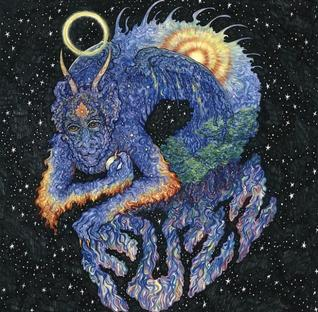

Fuzz
If you're a fan of metal and like banger albums, I can't recommend this album highly enough. The song to listen to is Loose Sutures wasting no time with a solid intro riff, killer guitar leads, and a call and response section between the drums and bass. If you're not hooked by six seconds, you should get your money back.
